NEW SITE!
👉 See https://datajournal.guide 👈
old content
I have maintained a life-tracking project since 2013. If you’re interested in that, this page is for you.
Questions
Who
I did this, which means you could do it too.
What
Data Journal1 is a system I built to help me keep track of stuff that happens in my life. Its form has changed greatly over the past decade,2 but its function has remained the same: to house data about things I do. It’s a default place to make note of things that might not otherwise have a place. I’ve tracked lots of different things over the years.
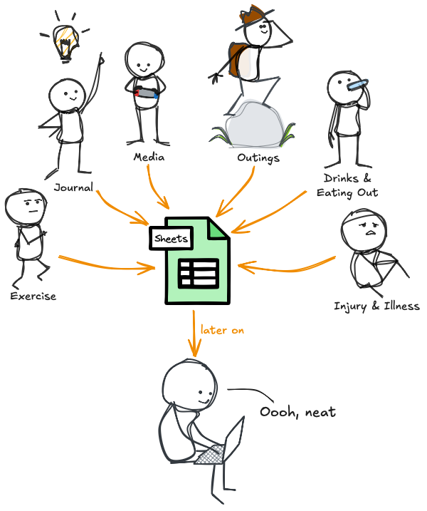
My Data Journal allows me to answer questions like:
- “When did this pain in my back start?”
- “How many workouts have I done this year?”
- “When was the last time I hung out with this person?”
- “How many drinks have I had the past few weeks?”
- “Have I eaten out more or exercised more this month?”
- “Have I met this goal I set for myself?”
What I’m Tracking Now
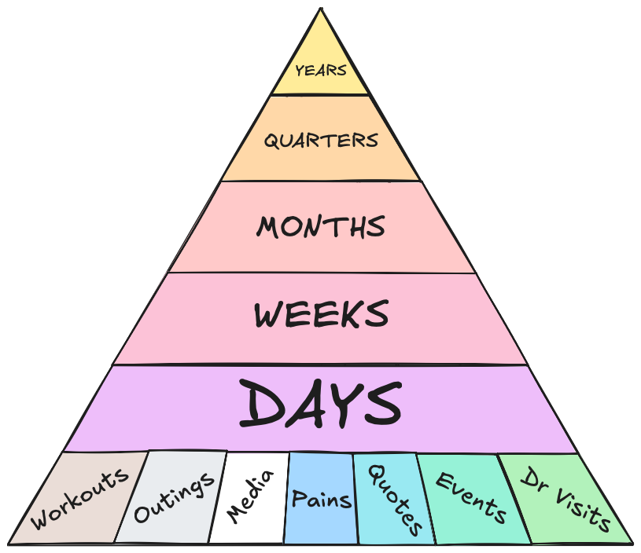
This list has been honed over time. I’ve tracked everything on this list since at least January 1st 2020, and several things dating way before that. I track these things because they’ve proven themselves either useful or amusing enough to continue being noted.
- Workouts
Name- title of workout or short descriptionType- one of strength/cardio/mobilityNote- comment field, usually about how the workout went- Pains
Pains- comma separated list of symptomsTreatments- comma separated list of medicines/therapiesNote- what happened, or general place to complain- Media
Type- one of book/movie/TV/VideogameTitle- of the piece of mediaFirst Time- yes or no, is this my first time with this piece of media?- Outings
Type- comma separated list of various tags, e.g. eating out, seeing friends, etcWhere- name of place visitedNote- usually how it went or why we’re there- Quotes
Quote- what was saidQuoter- who said itNote- any additional context- Events
Event- a catch-all for any time-based thing I want to make note of - e.g. “replaced hot water heater”- Doctor Visits
Type- dentist, doctor, etcWhere- name of clinicWho- name of doctorReason- why you were thereNotes- take aways, reminders to self, etc- Daily Things
Summary- A brief description of the day. What I did. Who I saw. How it went.Health- 1-to-10 how healthy do I feel?Satisfaction- 1-to-10 how satisfied am I with the day?Bedtime- time of night falling asleepWake- time of morning wakingSleep Duration- duration between the aboveSleep Location- city & state I’m located at at 3:30 AMWork Status- one of Weekend/At Work/WFH/Holiday/Sick/Vacation- Weekly
- Formulas summarizing all of the above
- Monthly
- Formulas summarizing all of the above
Vacation- any vacations taken- Quarterly
- Formulas summarizing all of the above
Fitness Test- the date of the Overall Fitness Test I did during the quarter- Yearly
- Formulas summarizing all of the above
Big Event- it seems like every year has one, they mark the passage of timePuzzle Box- name of my annual puzzle boxLooks like a lot, and it probably is, but I’ve made capture very easy. All of the sleep-related stuff happens automatically. Everything else is primarily entered in an ad-hoc manner via Siri Shortcuts. See How I Do It.
When
I started with a pen & paper back in 2013 and haven’t stopped since. You could start today.
As far as when to track things - tracking inputs happen as frequently as you want them to. I track stuff from once/week or fewer all the way down to multiple times a day. Depends on the thing, how easy it is to track, and how much value I get by tracking it.
Where
In concept, the Data Journal could be built using anything that can hold data. Some Bullet Journalers use their physical notebooks to do something similar. It’s easier to scale over time if you use technology. Easiest of all if you put it in the cloud.3 For those options, Google Sheets or Notion both make great choices.
Why
There are a bunch of reasons “why”…
- fantastic memory recall of the past
- better attention paid to the present
- having a framework around which future goals can be built and maintained
- specifically in my case - having a great testbed application and reason to learn to code, system design, and how to make things work
…but honestly, my best response to the question of “why” is ”why not?”
How
This is why I made this page at all. This is what separates this page from my 5 year, 7 year, 10 year, and most recent retrospectives on the project.
If even one person benefits from reading this I will be very pleased.
How To
How I Recommend Starting
First, ask yourself:
- What you want to capture?
- What you want to do with what you capture?
- What technical skills do you have now, and what skills are you interested in developing?
There are plenty of options to get you started. I’m not going to go into any of them in detail, but try any of these to begin with before trying to make something fancy.
- Just carry around a notebook and a pen. I tracked with a pen and paper for a year, manually transcribing to Excel each weekend. That worked fine.
- Use a Google Sheet, or a few Google Sheets, maybe along with Google Forms and/or IFTTT.
- Spin up a Notion database based off some habit tracking or journaling template that you like.
- If you’re mostly interested in habit tracking, I’ll plug one of my favorite apps Streaks on iOS.
Track things to the best of your ability, either throughout the day or just at night before bed. Put it in your calendar or to-do list. Review after a month or so. Make adjustments.
This is the best place to start. Don’t jump in and try to perfect things out the gate. You won’t know what’s working until you try it, so just get started with something basic. You can evolve your system from there. Don’t make it complicated, because Highly Specialized Solutions are Highly Brittle.
How I Do It
In my experience, the best bang for your buck toolset is Google Sheets + Google Apps Script (the macro-like scripting engine behind Google’s productivity suite) + Siri Shortcuts (Apple’s wonderful scripting application).
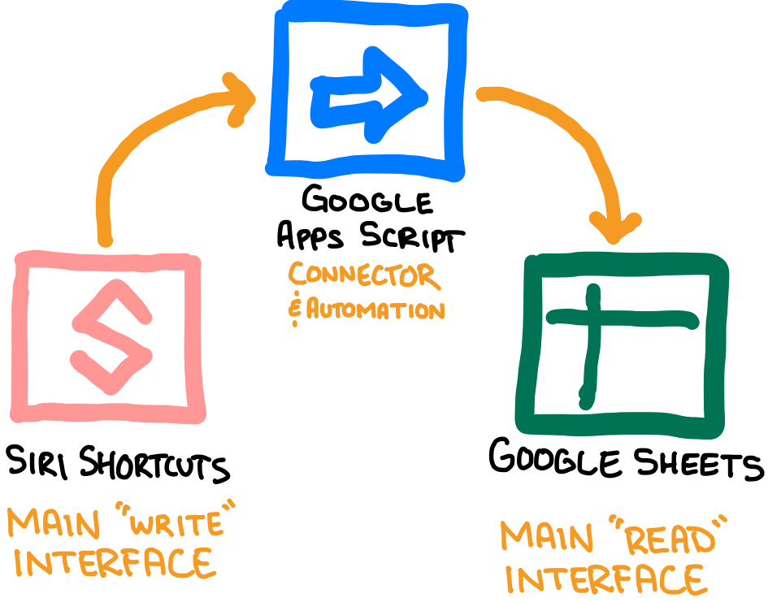
Google Sheet
The whole thing is built around a single “master” Google Sheets workbook. I made this blank copy for you to look around in.
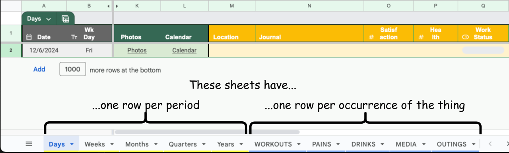
There is one sheet per each level of granularity you care to track. At a minimum I’d recommend sheets for
Days,Weeks,Months, andYears. Each row in these sheets corresponds to one period of time, and you don’t skip rows.4 If you decide some things you want to track more frequently than “once/day”, then the best thing to do is add a sheet dedicated to tracking that thing. Each row in that sheet then represents one instance of that type of event.Create columns for each piece of data you want to track in whatever sheet it belongs in. If it’s something that happens every day, put it in the
Dayssheet. Create additional columns with formulas in them to pull data from other sheets as desired. You could, for example, use anaverageif()formula to pull a daily “Health” rating from theDayssheet into theWeekssheet to see how your health is trending over the year. I include several “index” columns to make formulas easier for pulling data between spreadsheets. Each of the “one row per occurrence” sheets share a common schema for the first 6 columns: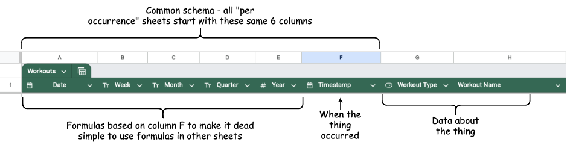
This allows you to use formulas like
countif()andaverageif()to select rows that belong to a given period of time.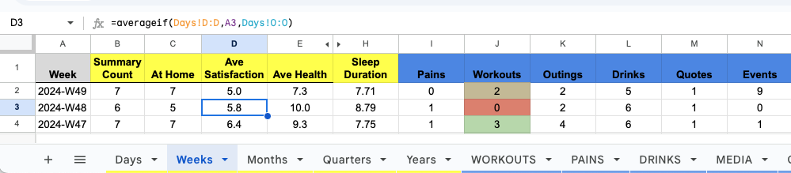
In short:
What I track at each level of granularity.
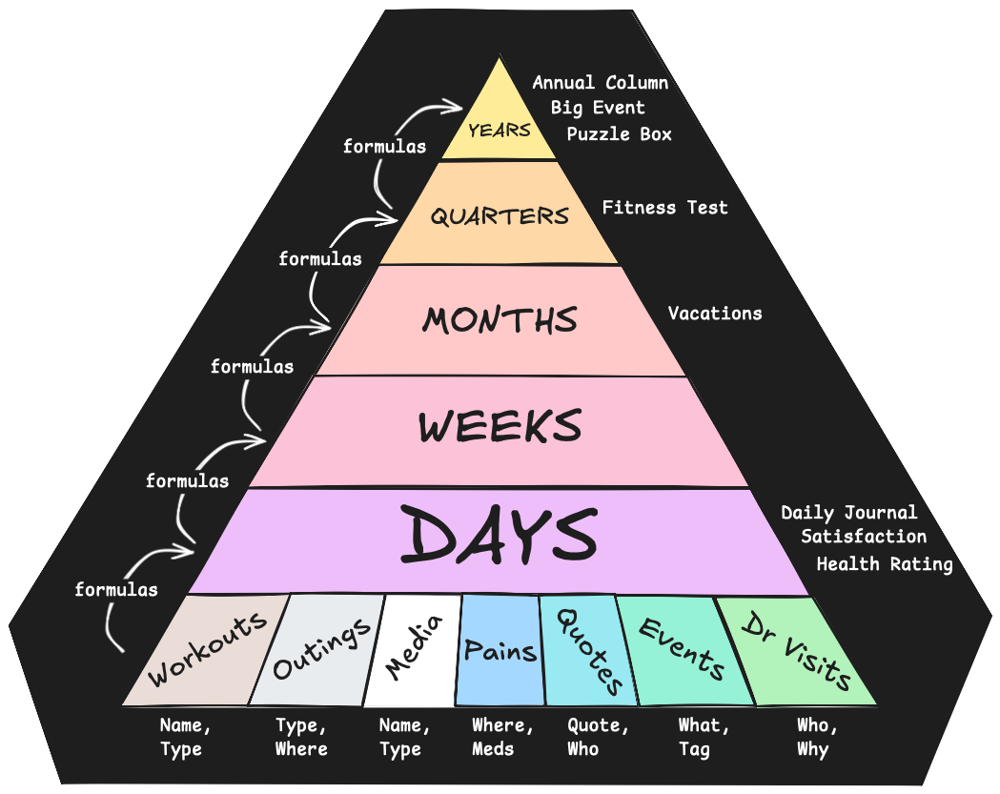
Google Apps Script Web App - Your Own API
Create a Google Apps Script using code like this5 to do 1, 2, or 3 things - in order I’d recommend:
oneAM()- Setup a nightly Trigger that auto-generate rows for you each day/week/month/year. This is a relatively simple process that makes the whole thing much less tedious.doPost()- Publish a webapp to allow for writing data to the workbook from anything that can generate an HTTP POST request (e.g. Siri Shortcuts, IFTTT)doGet()- Include a route on the webapp to allow for retrieving data. I kept mine relatively simple:- default behavior => return today’s data, and year-to-date data (see Widgets with Scriptable for why)
- include
?export=sheetname=> downloads a CSV copy of whatever sheet’s name you supply (for automating local backups)The secret sauce is really the automations to always have new rows created for each period of time AND to setup the doPost API route to allow automated data writing from Siri Shortcuts. These two things alone ensure you’ve got space to put stuff and that you’re putting at least something in that space. Once you have some data in a spot it becomes motivating to try to fill the blanks.
Siri Shortcuts
The first part of the secret sauce was automatically creating one row per day, the second part was making it crazy easy to get data into your system using your phone, watch, or voice via Siri Shortcuts. It’s as easy as:
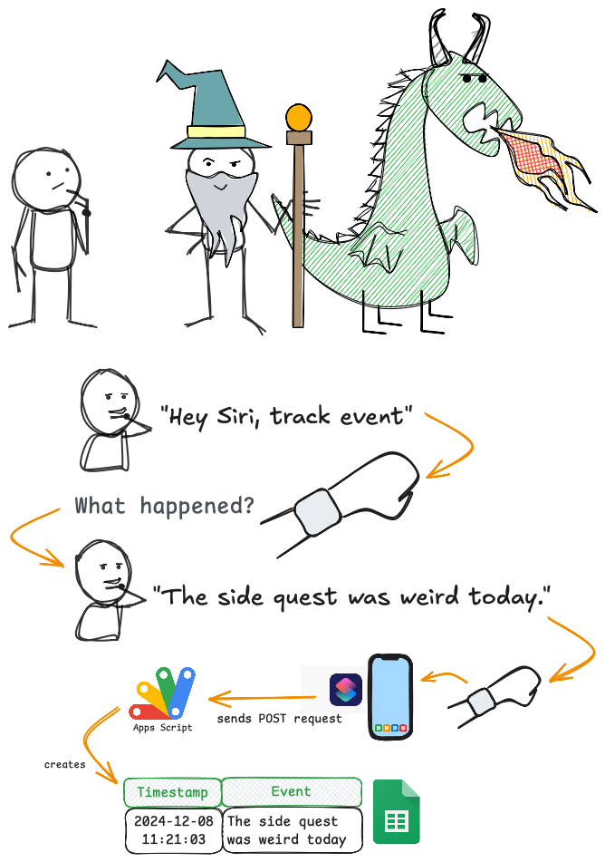
Siri Shortcuts lets you input data from any Apple device by talking, typing, or even doing nothing at all (when you set up automations). Getting data in has never been so easy.
After setting up the WebApp, with literally one action in a Siri Shortcut you can create an easy-to-trigger, easy-to-automate, easy-to-reuse Siri Shortcut for adding new data to your Data Journal.
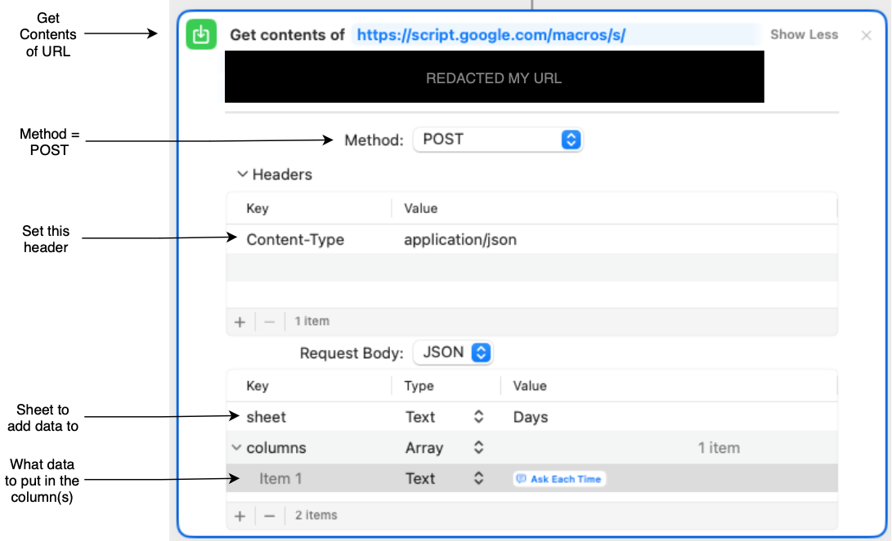
I have about a dozen Siri Shortcuts that look like that, each for inputting a specific kind of event data. Most of them I trigger using my voice or keyboard, but some are fully automated & I never trigger manually. For example - every night at 3:30am my phone sends to the Data Journal the city I am in. This
Sleep Locationmetric I use to keep track of how often I’m traveling, and it happens without me doing anything.Widgets with Scriptable
Scriptable is an app on iOS & iPad OS that allows you to write scripts and build your own widgets using JavaScript. You can use it to make your own widget(s), then use your own webapp API, you can send a
fetch()request to grab data and use it. I’ve made a widget that displays today’s data, and widget that displays year-to-date data. They aren’t super pretty, but they are super effective reminding me to track things & showing how I’m doing on the year.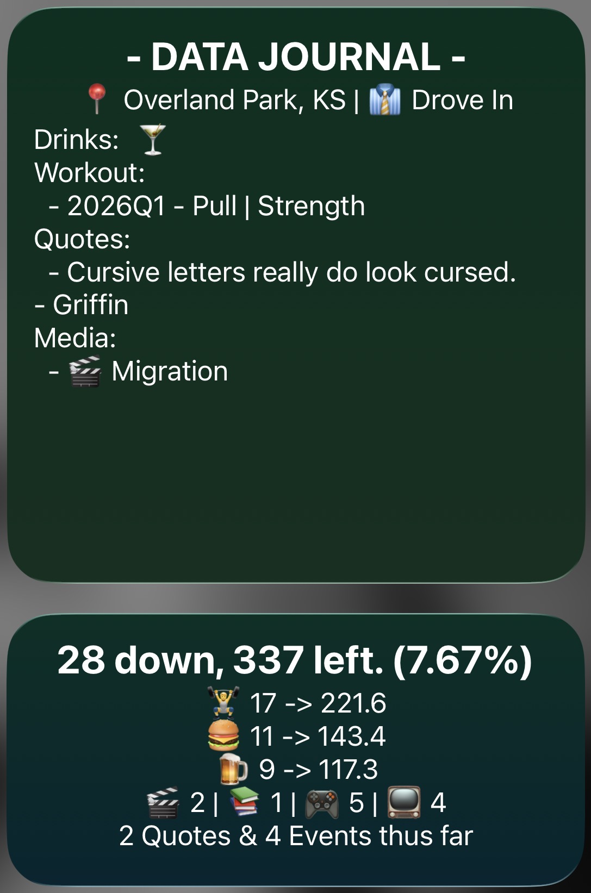
How I’ve Done It - A Brief History
This is how the system evolved over time - in very brief.
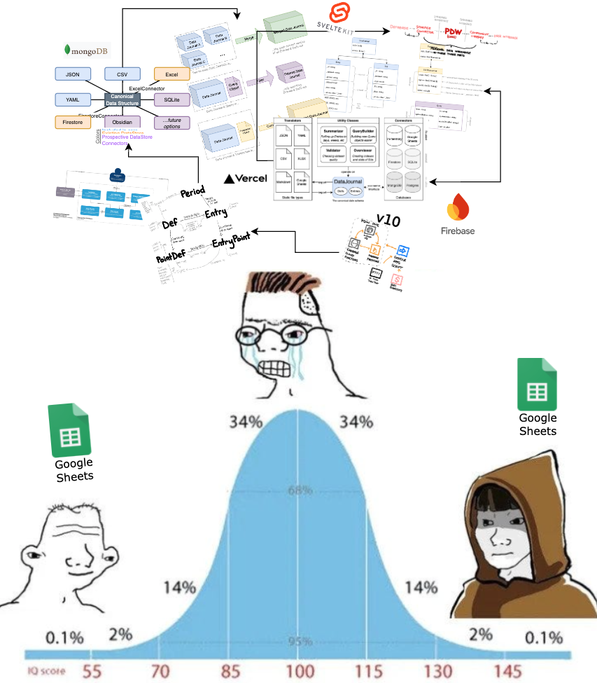
For a tiny bit more detail…
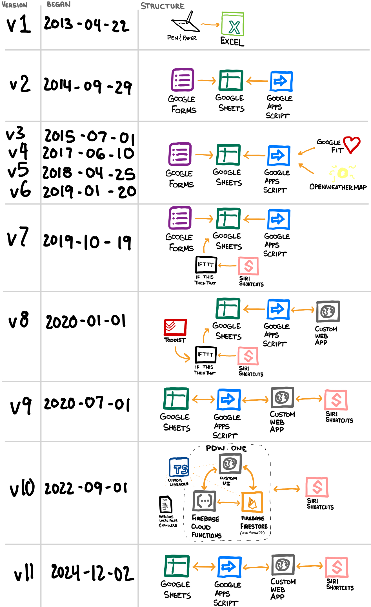
Versions rolled each time I changed what I was tracking… most of which also coincided with some form of system structure/architecture change. In general, I started tracking a little, then a lot, then way too much, back down to just a lot, and now I’m settled at a medium amount (but probably still what you’d consider “a lot”).
Conclusion
Making the Data Journal was (and still is) a continual process of learning, refinement, and optimization. Using it did all those same things when it came to my lifestyle. It has been my 4th best constant companion for the past many years. If I hadn’t had such a good reason to learn all these things, I reckon it would have never happened.
Epilogue: Short List of Technical Things I’ve Learned Thanks to this Project
Here’s an incomplete list of the technical things I’ve learned thanks to this project.
- Basic Web Development
- JavaScript
- HTML
- CSS
- Slightly less basic web dev
- TypeScript
- I wrote my own JavaScript Framework NPM Package (that you shouldn’t use)
- NPM publishing
- Tailwind
- Svelte
- Local development
- NodeJS
- Siri Shortcuts - a surprisingly powerful tool.
- Siri Automations
- Google Apps Script - another surprisingly powerful tool
- Automated triggers
- Web App deployment
- Scriptable App
- Custom widget creation
- REST API consumption
- Google Fit
- OpenWeatherMap
- Oura
- Google Sheets
- REST API creation
- Node + Express
- SvelteKit
- Firebase Functions
- Google Apps Script Webapps
- Authorization implementation
- Firebase + Firestore
- Custom tokens
- NoSQL Databases
- MongoDB
- Firestore
- Serverless compute
- Vercel serverless functions
- Firebase Functions
- Unit Testing
- And why/when it’s worthwhile
- High-level software concepts
- Architecture
- Separation of concerns
- Standardization & interface-orientation
- Documentation
- Designing & packaging plugins
- Hardest lessons of all:
Avoiding complexity is the #1 most important thing
Sometimes living with small problems is the correct solution
Options & features don’t deserve to exist because you thought of them
Footnotes
-
Formerly known as Data Journal. Formerly known as Life Tracker. Formerly known as Demetri List. ↩
-
From pen & paper, to a spreadsheet, to an expansive set of web apps, databases, utility functions, custom user interfaces, and translators, back to a humble spreadsheet. ↩
-
This has privacy implications, though. By putting your life in a system then that system in the hands of some cloud-based software you’ve given a lot of trust to the company that runs it. You could use local files to accomplish everything I go on to describe. ↩
-
It’s better to have blanks on days where you failed to track something that it is to just delete the row for that day. ↩
-
Which should be included in the sample “blank” Data Journal workbook, by the way. Under “Extensions” > “Apps Script”. ↩